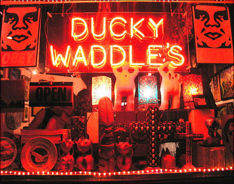

Ducky Waddles
From The Giant: The Definitive Obey Giant Site
|  |
{kind=link}
Taken from the Ducky Waddles Emporium website:
Ducky Waddle's Emporium is located in Encinitas, California. We offer books, art and unusual gift items. As a book store specializing in items not easily found in other stores, we have many areas of specialty including: art, design, architecture, tattoo and body modification, photography, erotic art, poetry, drama, reference, sports, California, Baja California, pop culture, gay and lesbian fiction and non fiction, auto and hot rods, skateboarding, surfing, television, film, sexuality, erotica, Betty Page and pin-up art, science fiction including Star Wars, Star Trek and TV S/F, Tolkienana, vampirism, horror, alternative fiction, women's studies and fiction by women, black americana, biography, arts & crafts, fashion, cookbooks, music, and religion (with a small "r") including wicca, mysticism, occult, zen, Christian dogma, yoga and more. We also specialize in vintage paperbacks and twentieth century first editions.
Inside Ducky's is The EMPORIUM Gallery. We feature one man gallery exhibitions of local emerging artists but also continually show New Art, Low Ball Art, Pin-up Art and International Folk Art by indiginous cultures from Latin America, Africa and other areas. Please feel free to contact me personally either by phone, fax, or e-mail for your wants or book searches. We do work on our web site daily so refresh your image when you return to our site after being away for awhile.
Review of the store from IExplore:
Yes, Virginia, there's a Ducky Waddles. Incredible hodgepodge of books and of art that is "Waay Out" to this viewer. My eyeballs haven't recovered yet. Located right near Lou's Records (in fact, you can see the Ducky Waddles sign in the third of the photos posted in the Lou's entry), this business used to be located south of Encinitas Boulevard in downtown coastal Encinitas. Its more congenial home is this location for its Leucadia all the way.
You won't find any bestsellers in the books section, either old or new, but you will find some interesting classifications- "religion with a small r," "gay and lesbian fact & non-fiction," "tattoo & body modification," "erotic art," "Tolkienana," and "vampirism" are some of the classifications that riveted my eyes.
But, I hadn't seen anything yet. Their gallery is bizarre to me: the current featured artist is the "Haute Art" of Walter Wojtyla, a show that runs through the month of June. My prejudice against much of modern art must be admitted; even in the Tate Modern I saw piles of things in corners that I will never consider art-to me they look like experimental exercises in what the art world will on a whim gush over for its daring audacity. Mr. Wojtyla, according to the posted signs, is an "established artist," and some of the price tags accompanying his art seemed to reflect that status, but I couldn't live with any of the garish work I saw.
As an alternative eye-opener, a short visit to this emporium is illuminating. Signs for coming one man shows did display mostly what I would consider extraterrestrially eccentric, but,I guess there's tribute here to the hoary saying, "In taste, there's no disputing."
My reaction to the very modern art this gallery displays is not totally negative, however. The silkscreens of Marco Almera, for example, caught my eye, as well as a work entitled "Silver Surfer," by an artist called Mobius, which was on the store's web site. Their e-mail newsletter is fittingly dubbed "Quack of the Duck." If you want to be adventurous, or really have an affinity for modern art, or are searching for comic art, this unique store might aid you in your search for the avant garde. The telephone number is 760-632-0488, useful as opening hours seem a bit erratic.
Ducky Waddle's Emporium was the site of Hard Copy, a book signing for Shepard Fairey's Supply and Demand, held in conjunction with a gallery show featuring over 30 Shepard Fairey prints on aluminum. The signing took place on July 15, 2006, from 6:00 to 10:00 PM.
External Links: Myspace